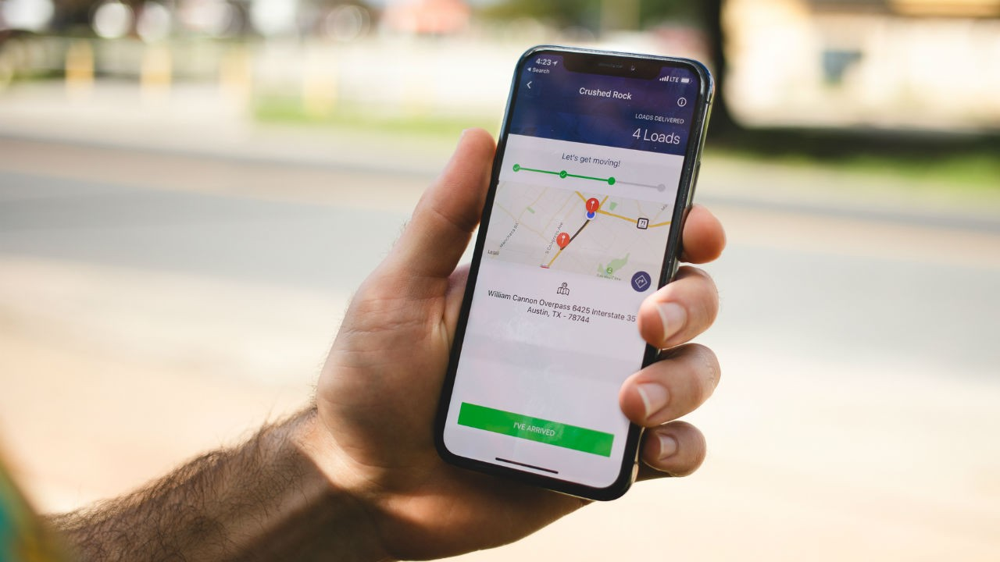
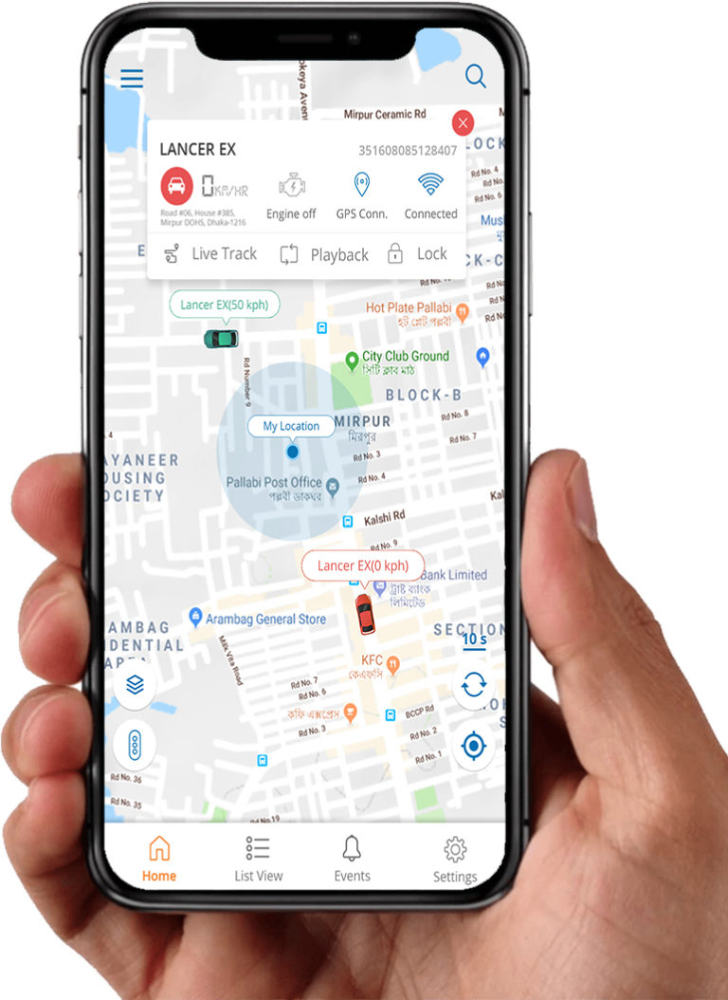

Liveasy
How is your Mobile App Experience?

Mobile App Experience
01 INTRODUCTION
Can anyone tell why truck booking applications are suddenly booming in app stores and are being provided by so many companies.Just before 10 years there were hardly any apps which people preferred to download other than basic one like calculator/games and etc.But now days most business are creating apps for providing their services .This just shows where are we moving towards in the future.
02 CONTENT
There now days each facility is been provided at doorsteps or just at your mobile without wasting any of your time.Why these online services are being used so much as after all they do not represent any physical form of work? So has the work become harder or easier by coming off so many apps on your phone?


02.1 Evolution of Digital Era:
Since the evolution of digital era there are lots of facilities being provided to you at your door step.In 2016 there were a total of 140.68 billions of app downloaders whereas in 2021 there were 230 billion of app downloaders which represents a increase of over 60 percent and which is tended to go over 300 billion by 2026. Digitalization has become a primary necessity in the current market because it's the best thing any business man or owner could have asked for.It allows you to reach heights which were not possible at all in a very short span of time.

The digitalization of business allows user to catch its services and gather its reviews,information from a very long distance which was physically impossible a decade ago.Today even when you search on internet about any requirement the internet whether its regarding education , food,grocery or even transportation.
02.2 Why apps for Truck Bookings and Logistics?
App creates an environment which would require no paperwork so to have an organized work culture and will also provide a boosted workflow.It will also help to know about various metrics like distance covered by truck in different seasons,time spent on driving ,mileage of multiple trucks at a time,efficiency of drivers etc.Mobile applications also allows to increase the customer loyalty towards the company and also to enhance customers usage and satisfaction provided by the company.An app allows it to be reviewed by persons in real time which also encourages the owners and also allows them to see their own mistakes or errors which are present in their working so that they could change it and work on it.
02.3 A good transportation app - LIVEASY
So overall Mobile apps enhance the productivity for the owner and the workers and provide opportunities for the users . They help to track user the processes which builds trust between and a user and benefits them all.SO downlaod a good transportation app such as LIVEASY
Liveasy – a transport mobile app helps you avail numerous transport related activities in just one go. With the app you can
Liveasy – a transport mobile app helps you avail numerous transport related activities in just one go. With the app you can
- Book vehicles
- Find loads for transportation
- Track your vehicle’s location
- Check its speed, maintenance etc

03 CONCLUSION
In conclusion, technology has changed the way we do business. This is true for all industries, but logistics is no exception. We are now able to do things that were once impossible. For example, we are able to track shipments in real-time, manage inventory and orders more efficiently, and even predict demand. This is just the beginning of what the future holds.